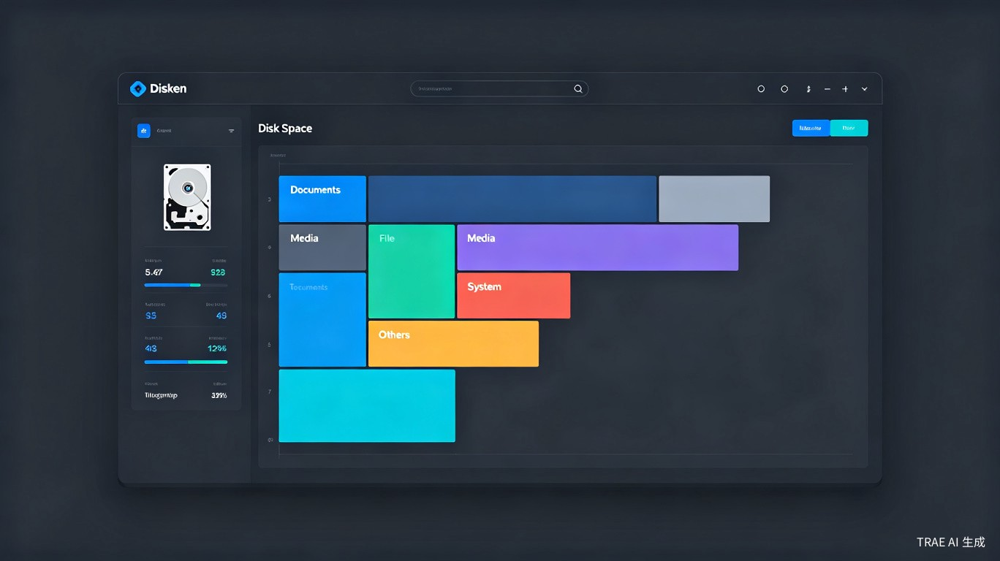
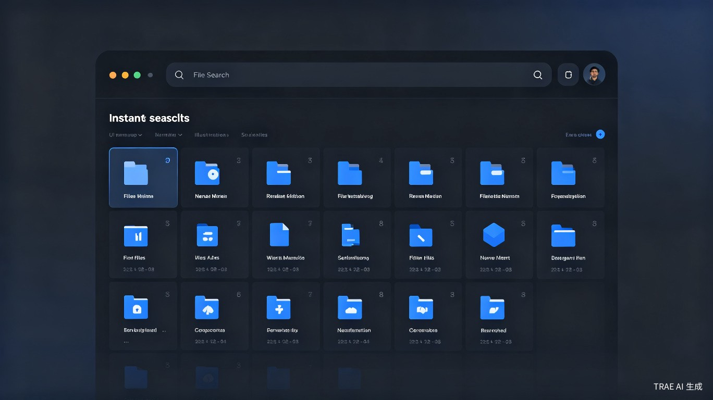
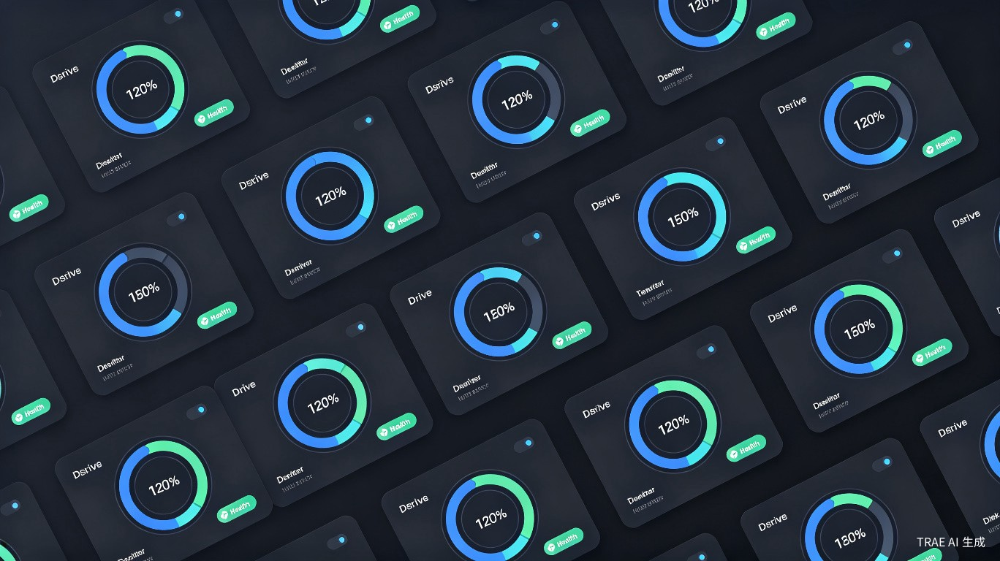

一个简约的、高效的硬盘管理工具。快速搜索文件、可视化空间占用、实时监控硬盘状态，让磁盘管理变得轻松简单。

日常电脑使用中，硬盘管理困扰每一位普通用户，现有方案却无法有效解决
逐层翻阅文件夹或使用系统自带搜索，算法老旧、响应慢，面对海量文件检索耗时久、精准度低，严重影响效率。
系统存储感知功能优化差、可视化程度低，用户无法直观查看空间占用结构，不清楚哪些文件占用了空间。
主流工具功能碎片化、全英文界面、专业术语繁杂，小白难以上手；优质工具强制付费、广告冗余、界面臃肿。
整合文件搜索、空间可视化、状态监控，一个应用完成全流程硬盘管理

告别系统低效搜索和手动逐层翻找，依托精准的本地文件扫描检索能力，秒级定位目标文件，将原本数分钟的查找操作缩短至数秒。
将硬盘空间占用、文件大小分布、冗余文件类型进行可视化呈现，让用户直观看清存储结构，精准定位大体积无用文件、缓存垃圾。

实时监控硬盘健康度、温度、读写速度等关键指标，提前预警潜在故障，保护数据安全，让硬盘状况一目了然。
重构个人硬盘管理方式，填补轻量化国产工具空白
| 功能维度 | Windows 自带工具 | 专业付费工具 | Disken |
|---|---|---|---|
| 快速文件搜索 | ✗ 极慢 | ✓ 快 | ✓ 秒级 |
| 空间可视化 | ✗ 无 | ✓ 有 | ✓ 直观树状图 |
| 硬盘健康监控 | ✗ 无 | ✓ 有 | ✓ 实时监控 |
| 中文界面 | ✓ 有 | ✗ 多数英文 | ✓ 原生中文 |
| 操作门槛 | ✓ 低 | ✗ 高 | ✓ 极简 |
| 广告干扰 | ✓ 无 | ✗ 部分有 | ✓ 无 |
| 价格 | ✓ 免费 | ✗ 付费 | ✓ 基础免费 |
精准定位核心用户群体，解决真实场景痛点
不熟悉系统操作，需要直观、中文、零学习成本的工具来管理文件和硬盘空间。
希望用最短时间完成文件查找和空间清理，拒绝低效操作和臃肿软件。
日常电脑维护、照片视频整理、硬盘空间清理的刚需场景，使用频次高。
从 MVP 到完整产品，逐步构建硬盘管理生态
快速文件搜索、基础空间可视化（树状图）、硬盘状态监控。验证核心用户价值，收集早期反馈。
增加重复文件检测、大文件扫描、文件类型分析、清理建议等进阶功能，提升用户留存。
云同步、跨设备管理、企业版、API 开放。通过增值服务与定制化实现温和商业变现。